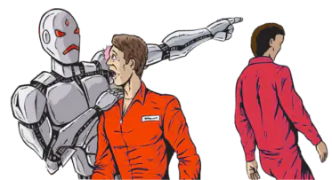
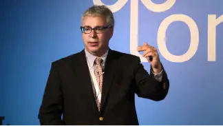
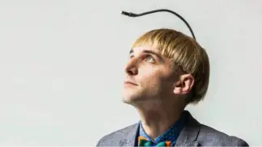

Qu’est-ce que le transhumanisme ?
Le transhumanisme est apparu en Europe du Nord et aux Etats-Unis il y a plus de trente ans. Il s’agit d’un mouvement philosophique et scientifique. Ce mouvement prône l’usage des sciences et techniques dans le but d’améliorer l’espèce humaine. Cela permet d’augmenter les capacités de perception, de cognition, de réflexion et de performance.
C’est en 1957, au début de la cyberculture américaine que naît le mouvement quand Julian Huxley utilise pour la première fois le terme “transhumain”. Il définit par ce mot l’Homme voulant s’améliorer grâce à la science et la technologie.
Le symbole du courant transhumaniste
Les opposants au courant transhumaniste
En premier lieu, les opposants au transhumanisme sont les religieux. Pour eux, la mort est une bonne chose. Elle ne doit pas être redoutée et, en évoquant le paradis, les croyants doivent garder espoir. Ces communautés enseignent comment réussir notre mort. Ils ne tentent en aucun cas de la supprimer.
Viennent ensuite les intellectuels humanistes... Selon eux, une vie sans la mort n’est plus une vie :
C’est précisément la conscience de la brièveté de notre passage sur la Terre qui donne lieu à nos désirs, à nos passions et à nos actions les plus remarquables. La mort de la mort serait paradoxalement la mort de la vie.”
Enfin, les néo-luddites. Ils s’élèvent contre toute mécanisation. La majeur partie des néo-luddites sont des héritiers du mouvement ouvrier anglais du 19ème siècle. Ils se battaient contre la mécanisation de la production. De nos jours, ils tentent plus particulièrement de résister à la technologie génétique.
La technologie au-dessus de l’homme
Les sociétés aux portes du futur
Malgré la présence de nombreux opposants, des recherches sont effectuées dans plusieurs pays...
C’est le cas aux États-Unis où des chercheurs tentent de convaincre la Food and Drug Administration que vieillir est une maladie. Le docteur Nir Barzilai mène le programme TAME. Ce programme consiste à cibler directement le vieillissement et non pas les maladies qu’il provoque :
“Il faut attaquer le mal à la racine afin de vivre plus longtemps et en bonne santé.”
Docteur Nir Barzilai
Niel Harbisson s’est fait implanter dans le cerveau un dispositif fixe lui permettant d’entendre les couleurs. Ce processus fonctionne grâce à la transformation des longueurs d’ondes des couleurs en sons. Niel Harbisson est le premier homme à avoir sur son passeport la mention “cyborg”.
Neil Harbisson et son dispositif
Affymétrix a déjà développé une puce ADN qui dépiste automatiquement les marqueurs du cancer et d’autres maladies.
Cet article pourrait ainsi se remplir, jour après jour sans jamais être exhaustif ni complet. Il est certain que lorsque vous lirez ceci, beaucoup de projets auront abouti tandis que d’autres auront débutés.